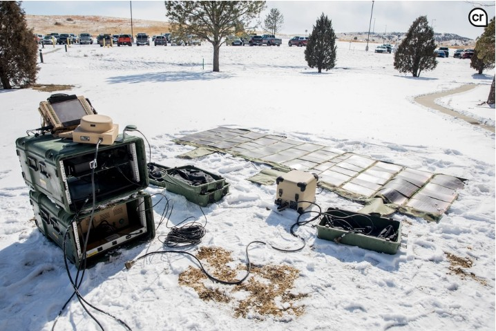

Projects
Triumph Daytona Webpage
This is a basic HTML webpage I created with some basic information about the Triumph Daytona 675, which is the motorcycle that I own. It includes information about the bike, its specifications, as well as a comparison to other bikes in it's class. of images. The webpage is designed to be responsive and visually appealing, showcasing the bike's features and performance. The webpage was built in VSCODE using HTML, and is optimized for fast loading times and smooth navigation. Overall, this project demonstrates my ability to create a functional and visually appealing webpage that effectively showcases a product or service.
Triple Cylinder Titan
Portfolio Webpage
This is the current webpage you are viewing. This HTML webpage was created for my first project in Computer Science Principles at MSU Denver to demonstrate the skills I have learned thus far. It includes information about myself, my background, and my skills. The webpage is designed to be responsive and visually appealing, showcasing my work and experience. The webpage was built in VSCODE using HTML, and CSS, and is major improvement over my previous work. More images, Bootstrap compopnents, and other features have been added to make this webpage more appealiong both visually and functionally.
Mobile Tactical Operations Center (MET-K)
This was a project I assisted in creating that involved designing and developing a mobile tactical operations center for use in military applications. It included the integration of various communication systems, data processing capabilities, and security measures to ensure effective command and control in dynamic environments. By leveraging my knowledge of communication systems and cybersecurity, I contributed to the development of a robust and reliable solution that met the operational requirements of the project. The MET-K project showcased my ability to apply technical skills in a practical setting, demonstrating my commitment to delivering innovative solutions in the field of military technology. The MET-K reduces the standard footprint of a tactical operations center by 50% and is designed to be easily transportable and deployable in various operational scenarios. Overall, the MET-K project highlights my ability to contribute to the development of cutting-edge technology solutions that enhance operational effectiveness and support mission success.
MET-K Project Details